ALL 27 GOVERNORATES
Environmental Efforts Across Egypt
Explore environmental priorities and project fields in each Egyptian governorate.
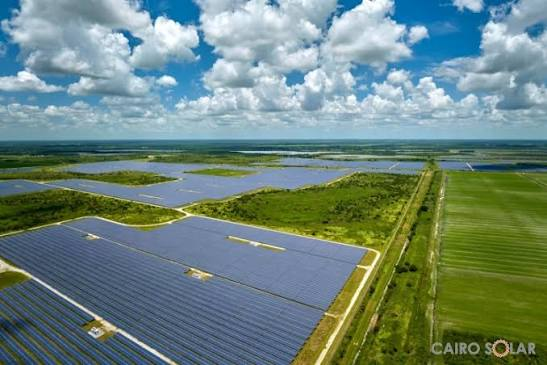
Urban SustainabilityCairo
Environmental priorities include improving air quality, public transport, waste management and expanding green spaces.
Focus: Clean Air and Urban Development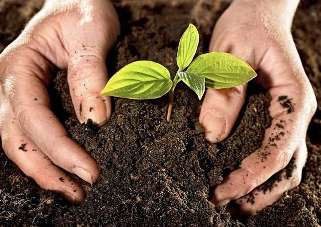
Environmental ProtectionGiza
Environmental efforts focus on reducing pollution, improving waste collection and protecting agricultural areas.
Focus: Waste Management and Clean Air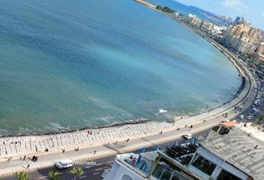
Coastal ProtectionAlexandria
Important priorities include protecting the Mediterranean coast, improving wastewater treatment and managing pollution.
Focus: Coastal Protection and Water Treatment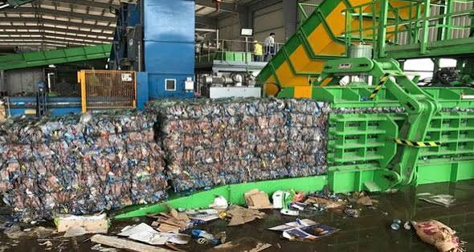
Water ManagementQalyubia
Environmental priorities include improving sanitation services, reducing pollution and protecting agricultural resources.
Focus: Wastewater and Agriculture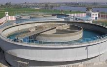
Sustainable AgricultureBeheira
Environmental efforts focus on efficient irrigation, agricultural development, water conservation and coastal protection.
Focus: Agriculture and Water Resources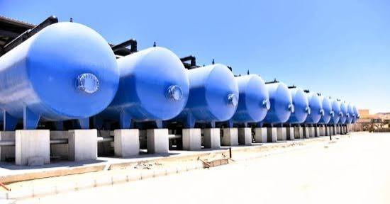
Natural ResourcesMatrouh
Environmental priorities include water harvesting, protecting desert ecosystems and developing sustainable tourism.
Focus: Water Harvesting and Eco-Tourism Coastal Protection
Coastal Protection
Kafr El Sheikh
Environmental priorities include protecting the northern coast, improving water quality and supporting sustainable fisheries.
Focus: Coastal and Water Protection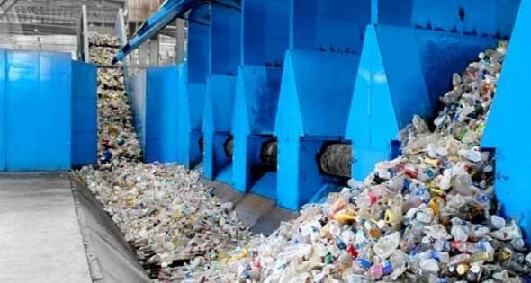
Waste ManagementGharbia
Environmental priorities include agricultural waste recycling, cleaner industrial activities and better sanitation services.
Focus: Recycling and Clean Industry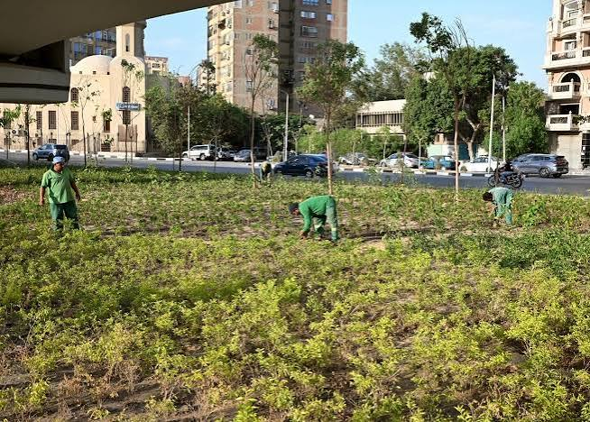
Rural DevelopmentMenoufia
Environmental priorities include improving rural sanitation, protecting farmland and managing agricultural waste.
Focus: Rural Development and Agriculture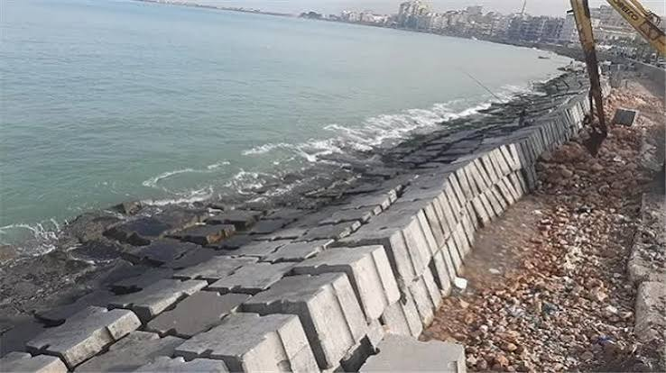
Water ProtectionDakahlia
Environmental priorities include protecting water resources, improving wastewater treatment and reducing agricultural pollution.
Focus: Water Quality and Agriculture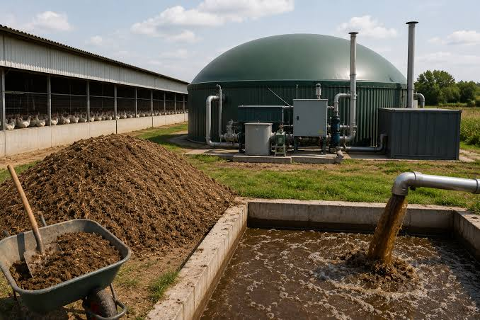
Coastal SustainabilityDamietta
Environmental priorities include protecting coastal ecosystems, improving waste management and supporting sustainable fishing.
Focus: Coastal and Marine Protection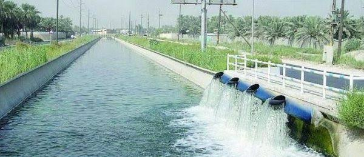
Sustainable AgricultureSharkia
Environmental priorities include improving irrigation efficiency, recycling agricultural residues and protecting farmland.
Focus: Agricultural Sustainability Marine Protection
Marine Protection
Port Said
Environmental priorities include protecting marine ecosystems, reducing port-related pollution and improving waste management.
Focus: Marine and Coastal Protection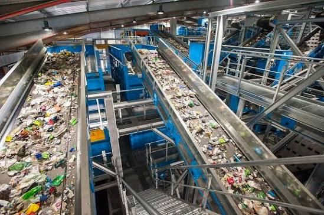
Water ConservationIsmailia
Environmental priorities include efficient irrigation, sustainable agriculture and protecting water resources.
Focus: Water and Agricultural Development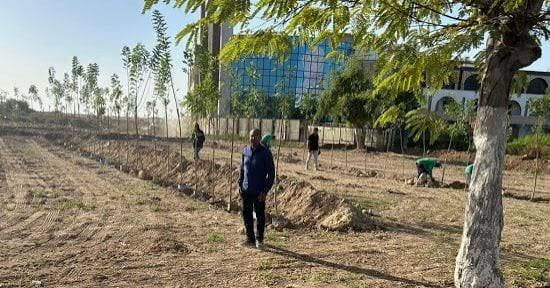
Clean IndustrySuez
Environmental priorities include reducing industrial emissions, protecting the Gulf of Suez and supporting renewable energy.
Focus: Industrial Sustainability Ecosystem Protection
Ecosystem Protection
North Sinai
Environmental priorities include water conservation, sustainable agriculture and protecting natural ecosystems.
Focus: Water and Ecosystem Protection Eco-Tourism
Eco-Tourism
South Sinai
Environmental priorities include protecting coral reefs, conserving biodiversity and promoting sustainable tourism.
Focus: Biodiversity and Eco-Tourism Natural Resources
Natural Resources
Fayoum
Environmental priorities include protecting Lake Qarun, managing water resources and preserving natural habitats.
Focus: Lakes and Natural Resources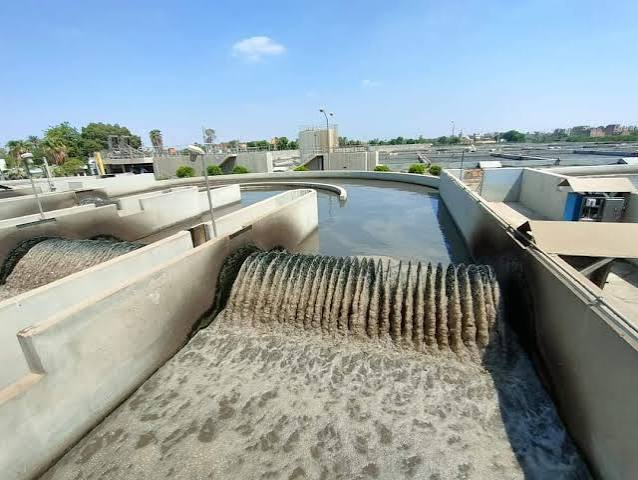
Rural DevelopmentBeni Suef
Environmental development includes improving sanitation, water management and sustainable agricultural practices.
Focus: Water and Rural Development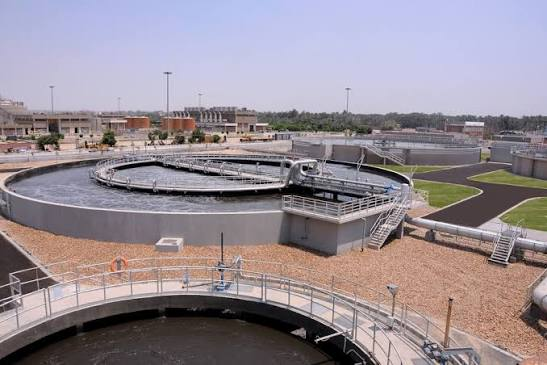
Wastewater TreatmentMinya
A documented sanitation project is the Nazlet Al-Badraman wastewater treatment facility in Deir Mawas. Environmental priorities also include water management and sustainable agriculture.
Focus: Wastewater Treatment and Agriculture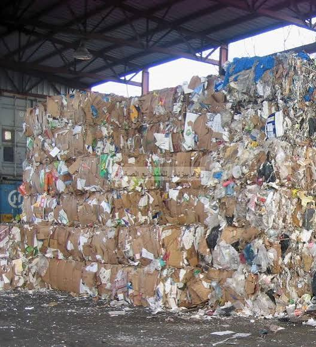
Green DevelopmentAssiut
Environmental priorities include improving sanitation, managing agricultural waste and conserving water.
Focus: Water and Sustainable Agriculture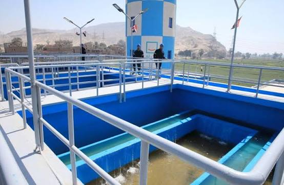
Sustainable DevelopmentSohag
Environmental priorities include improving wastewater services, supporting sustainable agriculture and reducing pollution.
Focus: Sanitation and Agriculture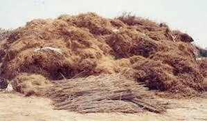
Renewable EnergyQena
Environmental priorities include improving agricultural practices, conserving water and supporting cleaner energy solutions.
Focus: Clean Energy and Agriculture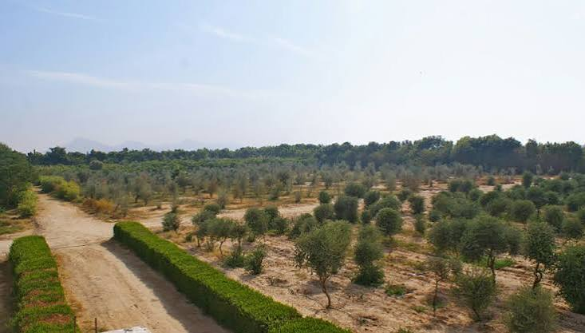
Sustainable TourismLuxor
Environmental priorities include sustainable tourism, energy efficiency, waste reduction and protecting historical and natural sites.
Focus: Green Tourism and Energy Efficiency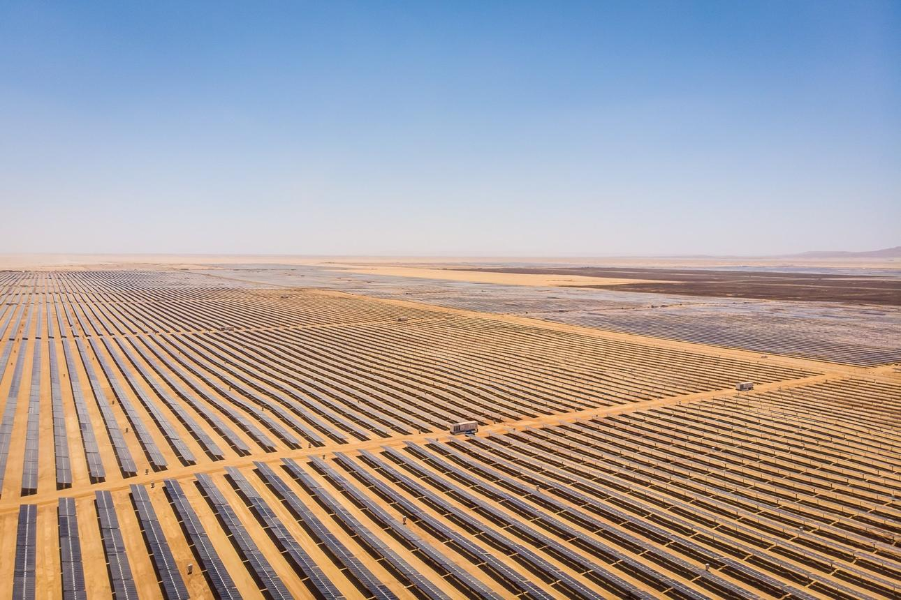
Solar EnergyAswan
Aswan is an important location for solar energy development. Environmental priorities also include water conservation and sustainable tourism.
Focus: Solar Energy and Water Conservation Marine Conservation
Marine Conservation
Red Sea
Environmental priorities include protecting coral reefs, conserving marine biodiversity and promoting sustainable coastal tourism.
Focus: Coral Reefs and Marine Protection Desert Sustainability
Desert Sustainability
New Valley
Environmental priorities include efficient water use, sustainable desert agriculture and protecting natural resources.
Focus: Water and Desert AgricultureNo governorates found. Try another name.